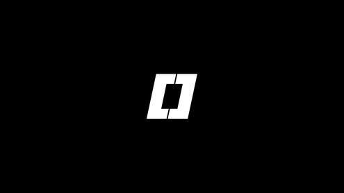

*** Mining with Rewards Launched Nov. 1st ***
In February 2018, a lone developer known only as Infernal Toast made a post on the Reddit forums. In it, he introduced a bold new project: a cryptocurrency called 0xBitcoin or 0xBTC.
It was a groundbreaking idea at the time. 0xBTC took the original proof-of-work model and reimagined it as an ERC-20 token on the Ethereum blockchain. This made it the first—and only—mineable token on Ethereum.
Over the years, the project quietly built a cult following, with over 8,000 wallets holding 0xBTC and 10 million coins mined out of the total 21 million supply. Despite its innovation, the project never got the recognition it deserved. It was never listed on major exchanges, and it slowly faded into obscurity during the 2017 to 2018 Ethereum smart contract, ICO frenzy.
PoW mining concluded in 2022, a critical mining bug was discovered in the contract. Since then, 0xBTC has been in limbo. Infernal Toast disappeared, and the future of the token has remained uncertain.
This project continues..
Today 0xbtc is launched as b0x
4 years in development, built on Base chain the very first Proof of Work over Proof of Stake model. B0x is 0xbtc with its abbreviation rearranged.
What we built is simply incredible.
B0x Tokens cost more to mint the higher the network difficulty and the time between block mints. Higher difficulty and lower times for blocks = Higher costs to mint. This aids the future health of the network. 50% to Liquidity Providers and 50% to Miners.
Running a Blackminer FPGA tuned to the appropriate frequency for your environment nets you 45-65 degrees celsius internal of free home heating enabling miners at home to reduce home heating costs and enabling profit per token mined. Make money from heating your home.
A trustless Proof Of Work that instead of being subservient to miners is actually a balance between Miners and Stakers. Wealth by work.
In legacy pow networks miners receive 100% of the reward for a transaction fee of 0.001$ then sold to liquidity for 0.3% ending up costing the miner nearly nothing to gain all the bounty. Now miners practice fair hashrate.
Right now miners pay about 30% of fees to mine the token to the contract, about $0.005 a token and pay another 35% to cashout.
So instead of 0% fees to mine and 0.3% to cashout they actually pay towards system growth.
Staking is currently at 274.37%
At current 31Gh/s equates to $5.393 USD in b0x value per day.
All legacy 0xbtc holders have a 1 to 1 rights to own B0x. Of the 10 million 0xbtc's across 8000 wallets, 10 million B0x are reserved for transfer to continue 0xbitcoin's legacy so get ready to swap your 0xbtc to b0x.
We are launched and if you would like to join our private mining pool please direct message us on our Discord channel.
We are working on a public pool that will increase our overall hash rate.. Current private FPGA pool is being optimized and we have already seen improvements.
Get a Limited Edition 500 B0x Paper Wallet. A paper wallet is a physical printout or handwritten record of your cryptocurrency public and private keys, used to store crypto assets offline for maximum security. Since it's completely disconnected from the internet, it's immune to online threats like hacking or malware, making it a form of "cold storage."
The public key on the paper wallet is like your crypto address—you can share it to receive funds—while the private key is what you use to access and spend your crypto, and must be kept secret.
We are developing a specialized tangible addition to the limited edition paper note that will be resistant to all elements and completely disconnected from the internet. You can get our limited edition B0x coin paper wallet before we release our additional private key holder so you can keep your B0x coin collection safe.
500 is a abstract denominator and is just a representational note, your private key can hold hundreds of thousands of B0x coins on our limited edition poly print notes. These are very high quality prints and not printed on traditional print paper, enclosed in magnetic acrylic.
Mine or purchase 10,000 B0x and get one for free. Message B0x on discord for your free paper wallet.
Max Total Supply
31,200,000.00
Mine it yourself with your CPU/GPU/FPGA/ASIC miner
10,835,900 allocated to the original 0xBitcoin holders